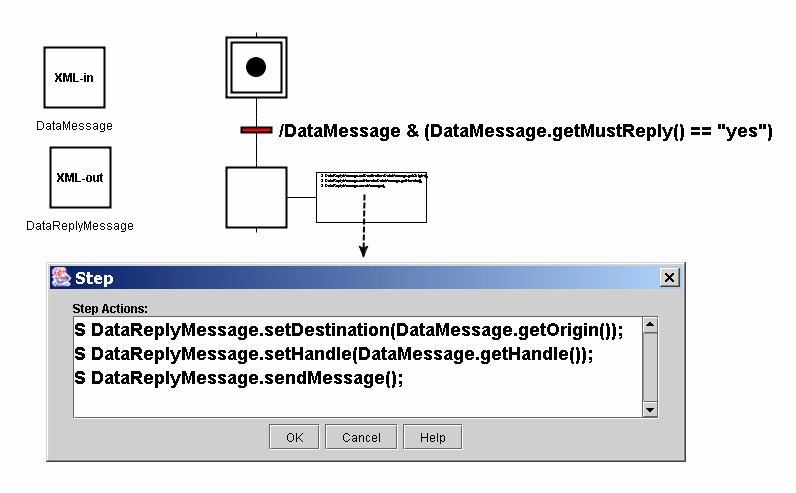

When a message is received for which the MustReply attributes has the value "yes" then a reply message is required. The handle attribute of the reply message should be set to the value of the handle of the received message.
An example of how a reply message is generated is shown below:
